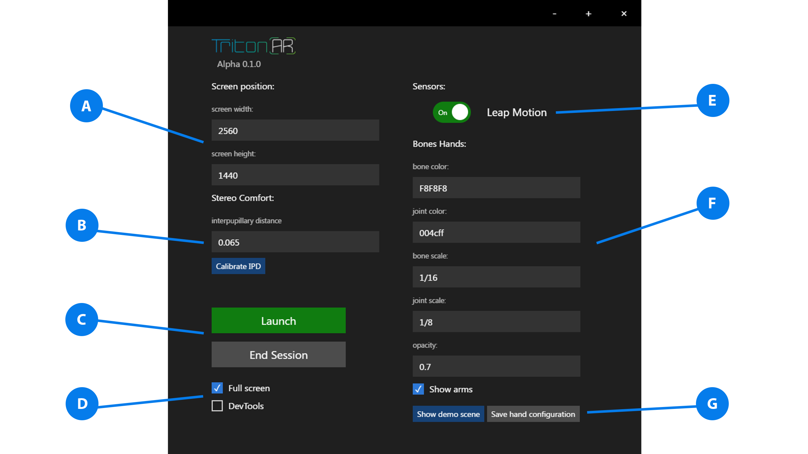
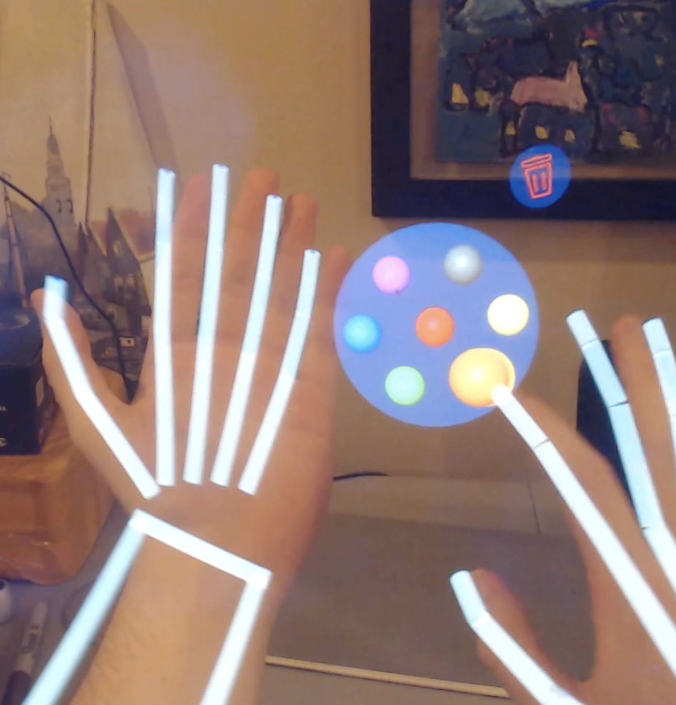
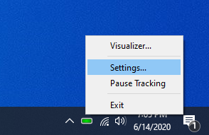
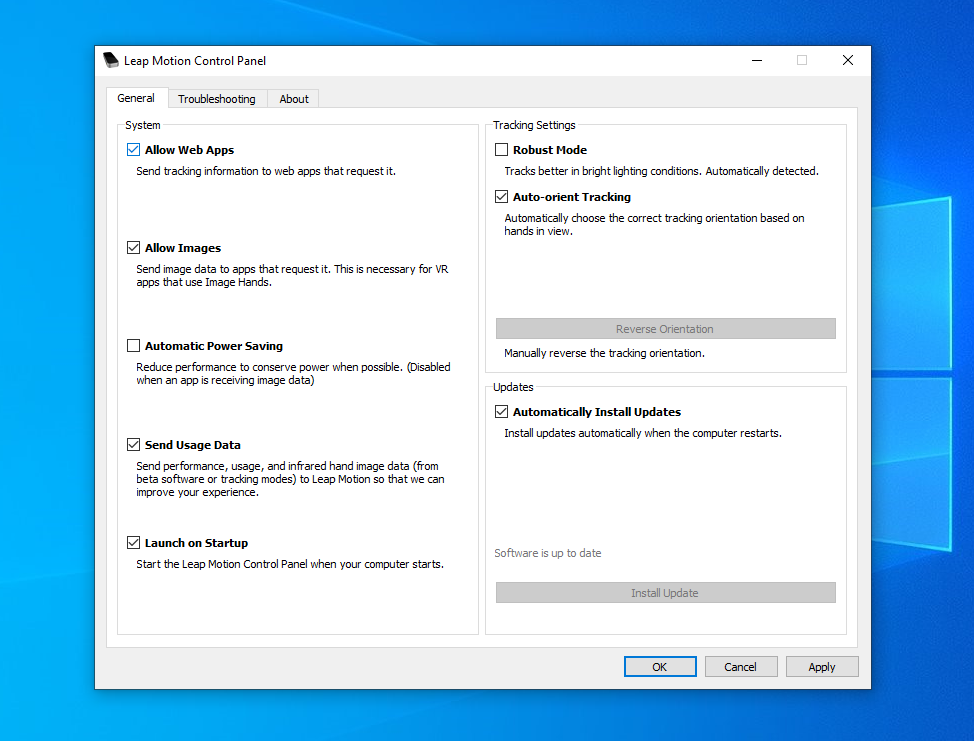

A. Adjusting screen position
The official screen resolution for the 2k 6inch display is listed as 2560x1440.
Electron uses Chromium multi-process architecture to display multiple windows.
In order to move a window onto the Triton display x and y positioning values are used.
The x value should correspond the screen's width (2560) and the y value should correspond
to the screen's height(1440).
B. Setting up stereo comfort
The Triton takes into account the variability in human interpupillary distances (IPD).
If you do not know your IPD you can manually find it by using the IPD finder tutorial.
Finding the near correct IPD is an absolute necessity to create the impression of 3d depth.
IPD should be input as decimal increments 0.064 = 64mm.
C. Starting and ending a session
Clicking launch will immediately send a window to the Triton display. Clicking end session
will kill the Triton window. End session will also close the leap motion hand demo window.
D. Screen controls and debugging
Full screen will enable any sub windows to automatically fill the Triton's display. Disabling it
will have the effect of making the window into a small window pane. The window will not be draggable with
a cursor but instead relies on inputs from the screen position fields.
Electron's architecture is built on top of Chromium thus enabling dev tools will open the standard
Google Chrome developer tools. You can use dev tools to debug any issues with your project.
E. Enable leap motion
If you do not plan to use the leap motion in your Triton Project then you can choose to leave it disabled.
Enabling the leap motion will automatically run all underlying code necessary code for hand tracking.
E. Leap bone hands customization
The leap motion uses a skeletal visualization called bone hands that overlay three.js graphics onto
your finger positions in real time. The bone hands visual is incredibly useful for hand object coordination
when performing any interaction in AR. These fields allow you to customize the look of those three.js
graphics.
Important notes:
- Bone & joint colors: only takes hex values, do NOT put # symbol in front of the hex. Example: 5aad00
- Bone & joint scale: Please type in fractions with no spacing. Example: 1/12 or 1/8
F. Save configuration
Clicking show demo scene will launch an isolated sample scene so you can view the bone hands visualization.
If you want the changes to take effect you must first click save hand configuration. This will save
your changes to a config file so that every time you launch a scene your bone hands settings will be loaded.

Triton Palm Menu
The Triton palm menu is a dedicated AR menu that attaches to the palm position of the left hand.
Apps are to be containerized and placed into cells A-D on the menu. The hand right hand index is
used a cursor to click on the menu cells. In a future update I will include support for people who
are left hand dominate.

1 demo app, Triton Paint, is included with the Triton menu which can be activated through clicking cell A.
To exit Triton Paint make a closed fist with your left hand and you will be returned to the main menu.
Leap Motion Troubleshooting

After installing the leap motion drivers a quick access icon should be added to the windows task bar.
If the leap icon is black right click the icon and click resume tracking.

IMPORTANT:
Since the TritonARLauncher is built on top of web technology and utilizes the Leap Motion javascript SDK
it is considered a web app. Make sure to check that 'Allow Web Apps' is enabled or else the leap motion will
not work with the Triton AR launcher.